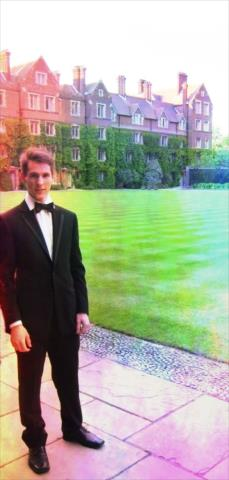
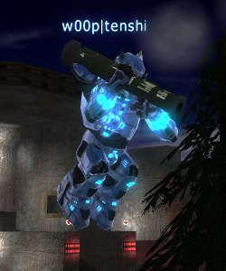
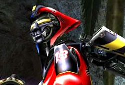
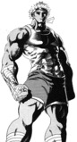
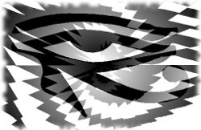
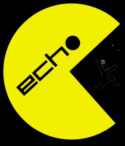
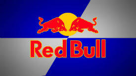
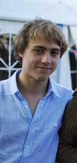
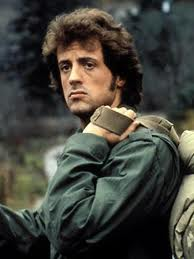
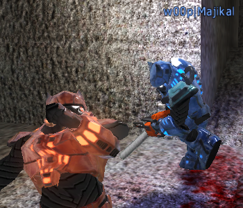

- Woop gods
- Drakas
 raffael
raffael- Sanzo
- tenshi
- Power players
- lagout
- Lexar
- Acuerta
- brownie
 Walker
Walker- Harrek
- Jokerstar
- Horus
- ech0
- honor
- Redbull
- Lucas
- Spirit of Woop
 Bunny
Bunny- MeganFox
 Lozi
Lozi- wtf?!
- Nighty
- Rhubarb
- Dam
- Ramb0
- New members
- Friteq
- Million
- Missing in action
- Majikal (God)
- M.I.A. »

Drakas
- OS
- Ubuntu Linux
- Location
- Singapore
- Height
- 5'10"/178cm
- Status
- Forever Bachelor
- Favourite gamemode (AC)
- ctf @ ac_mines
- Favourite food
- Broccoli
As a child, Drakas was known for being quite an engaged mind. In fact, you might call him an an über-geek although he really isn't one. That aside, he does make great use of computers and the internet and is pretty good at cooking. You'll see him bragging about how good something he just made tastes... and he'll eat it along with some noob meat too.
Drakas' first proper game was SimCity, which wasted much of his childhood on. Soon enough he was introduced to Quake 2, but did not take much interest in it, later encountering the fun Wolfenstein 3D. But in the later years, he found himself playing Unreal Tournament, where he was getting pretty much owned: it has a long history! At that point in time he was hooked on FPS. He advanced to Cube/Sauerbraten and Warsow soon enough. He also enjoyed playing Warsow, known as "Quake on weed".
In the days of old Sauerbraten, his competition was against rock.n.rol, sdk, nitronix, t0taln00b and others, some of the most famous players of the old days. In October 2006, Drakas, t0taln00b and Flapdrol, got together a team of those who want simply to pwn, because the clan competition was not big enough! That was when the "n00b-clan" was born. In a week's time, however, we renamed ourselves to the Woop clan, as we are today.
Drakas has managed this clan (Fragfests and AC World Cup) and participated in various competitions (ESL, AC Cups), provided the HI-SKILL ladder and Woop Clan AssaultCube Match League for AssaultCube, and lately duel.gg Sauerbraten ranking platform.
He spends his days as a professional software engineer specialising in Scala and system engineering.
raffael
- Favourite game
- Sauerbraten
- Favourite gamemode
- effic @ academy
- Location
- Bosnia & Herzegovina
too stronk.
Sanzo
- Location
- France
- Age
- 21
- Operating system
- Windows 7
- Favourite game
- AssaultCube
- Favourite gamemode
- capture the flag @ ac_mines
Sanzo's journey in AssaultCube began at the end of AssaultCube 0.93. He and his irl friend Gale0n built a friendship with ech0 and LiFe and eventually joined the Redemption Gaming clan (.rG!), the most active and skilled French clan at the time which was lead by Darknot and Brett. The last tournament Sanzo played as an .rG was at the ESL Summer Cup 2009 in which they were only surpassed by the legendary trio... Drakas, tenshi and Majikal. Sanzo was invited to join Woop in June 2009, which he accepted. Since then, Sanzo has played countless matches and tournaments - winning most of them! Following Drakas' departure from the AC scene, Sanzo took leadership of the AC squad to ensure that Woop's legacy would prevail.
"Even after such a long time, I still enjoy being in this family as much as I did when I first joined. I hope that this will continue as far as my personal life allows, and beyond."
tenshi
- Operating system
- Linux
- Location
- Germany
- Favourite game
- Sauerbraten
tenshi joined Woop in 2007 and since then changed the clan into what it is today, reigning both in AssaultCube and Sauerbraten. Not much is known about his elite lifestyle which involves computers.
Deimos
- Location
- Finland
- Favourite game
- Sauerbraten
Deimos first joined Woop in 2007 and left in February 2008. He came back in December 2009.
Rhubarb
- Age
- 32
- OS
- Ubuntu GNU/Linux 8.04
- Favourite Music
- Psychedelic Trance, Classical
- Location
- Australia
- Favourite food
- Rhubarb
- Height
- 6'1"/185cm
$ sudo chpwn rhubarb -R noobsRhubarb enjoys FPS games, such as Sauerbraten, Assault Cube, Urban Terror and World of Padman - all in 64 bit GNU/Linux goodness.
Other interests include:
- Bashing M$ noobs.
- Bashing Apple noobs.
- Bashing religious noobs.
- Encouraging noobs to be less noob-like.
- Spreading GNU/Linux (and GNU Hurd soon enough).
- Practising militant atheism.
- Psychotic bicycle riding
- Toast goodness
- Rhubarb
Tinkering with electronics, computers, and people's minds satisfies Rhubarb's curiosities.
Rhubarb's favourite super heroins and heroes:
- Captain Obvious
- Iron Snout
- Bad guys and gals in movies
{kind=link}
Rhubarb does not play seriously.
Rhubarb attempts to learn from other players, their good points and their weaknesses. Much like the Borg, except Rhubarb doesn't watch Star Trek.
Behind the scenes Rhubarb is handy in the kitchen, rhubarb being the key major ingredient in Rhubarb's signature dish.
Rhubarb is also an excellent ingredient that can go into Dinner and sweets. Which means there's never a meal that rhubarb can not be included into. It's one of the 5 major food groups!
Rhubarb likes to bathe in the w00p community, to chat about anything and everything, and to play some ggs. Come around and have a chat, play some games, chill out and unwind ;-)
If you use an oterapnig setysm taht heppnas to be mdae by mroicstfot or alppe, you pboblray wlil be mdae fun of by Rbuhrab. Use oepn sruoce wneherevr plebosse, and you wlil not be lkecokd itno any ptfalrom. And rbememer kdis, wrok srmat, not hrad.
Jokerstar
- Location
- Italy
- Favourite game
- Sauerbraten
Jokerstar joined Woop in November 2009.
13:36:33 <@Jokerstar> just write that, i am the hottest italian guy in the world, practice ju-jitsu and add some randos ( i dont care if are fake ) infos
lagout
- Location
- France
- Favourite game
- Sauerbraten
- Joined
- October 2012
- Mouse
- Kana mouse
- Favourite food
- Hot cheese foods
- Age
- 23
- Favourite mode/map
- effictf reissen & teamplay
lagout as a kid started off with Duke Nukem 3D.
He found out about Sauerbraten after coming back home from a drunken-as-shit night. lagout had been playing regen capture for a while before stepping foot in the clan scene.
As he is an ambitious person, he joined Woop to play with very skilled players and get his teamplay groove on.
lagout is also a fan of sounds, knowing how to play the guitar, banjo, ukulele, washboard. He can even sing, though we are not sure if that is a result of his sound engineering degree.
Sounds aside, he makes his living hunting unicorns.
lagout also likes Quake Live and Warsow.
ech0
- Age
- 19
- Operating system
- Windows 7
- Location
- France
- Favourite Music
- Rock'n'roll, Electro, Pop
- Height
- 5'8"/175cm
- Status
- Defender
- Favourite gamemode
- capture the flag @ ac_mines
- Favourite lesson
- Mathematics
ech0's first computer came in October 2007 with pretty old hardware, and soon enough he started AssaultCube, his first First-person shooter, in October 2007 with LiFe and Mitic. His first team was aCKa and then .rG!, and he moved onto Woop in June 2009, by whom his impressive gameplay skills weren't unnoticed.
Harrek
- Location
- France
- Favourite game
- AssaultCube
Harrek joined Woop in November 2010.
Acuerta
- Location
- Germany
- Favourite game
- Sauerbraten
Acuerta joined w00p in August 2011, intending to restore w00p to its place on the throne of Sauer. His efforts have proven to be a success. After 2 years of absence he rejoined w00p in October 2015.
brownie
- Location
- Germany
- Favourite game
- Sauerbraten
Acuerta joined w00p in August 2011, intending to restore w00p to its place on the throne of Sauer. His efforts have proven to be a success. After 2 years of wandering he rejoined in October 2015.
Lucas
- Age
- 19
- Operating system
- Windows 8.1
- Location
- France
- Height
- 165cm
- Favourite food
- Mediterranean food
- Favourite gamemode
- capture the flag @ ac_shine
- Favourite lesson
- Physics, Mathematics
Lucas discovered AssaultCube in 2009 and quickly founded a clan named HS.FR with his friend Jako74. One year later, the clan disbanded and they both joined IAF|. They made this clan more competitive and brought it a lot of victories, until Lucas was invited to w00p| in January 2011. A few months later, he also joined the development team of AssaultCube. Besides gaming, Lucas studies and loves Physics, and he particularly enjoys coding astrophysical simulations between after an AC clan match. Sometimes, you might also find him hiking and climbing in his place of origin, the Alps.
Dam
- Favourite game
- AssaultCube
- Location
- Belgium
Dam joined Woop in April 2011.
Horus
- Favourite game
- many
- Location
- Switzerland
Horus joined Woop in August 2011.
Lexar
- Location
- UK
- Favourite game
- Sauerbraten
Lexar joined w00p in March 2013.
Walker
- Location
- Germany
- Favourite game
- Sauerbraten
Walker joined w00p in March 2013.
Redbull
- Favourite game
- AssaultCube
- Favourite map
- ac_mines
- Location
- France
- Favourite food
- Frogs
- Age
- 20
Redbull discovered AssaultCube in 2008 thanks to a friend and became a competitive player several months later. He left Legendary Cubers (#LC*|) for Woop in August 2013.
Redbull is well known for his fragging skills and decision-making. He has tried Sauerbraten and is currently playing BF3.
In real life Redbull enjoys playing football.
honor
- Favourite game
- AssaultCube
- Location
- France
Honor joined w00p in August 2013.
Bunny
- Location
- Israel/Russian
- Favourite game
- AssaultCube and UrT
- Joined
- Bunny also known as BunnySoul joined w00p in December 2013
- Mouse
- Logitech G400S
- Favourite food
- McDonalds
- Favourite mode/map
- DM douze
MeganFox
- Location
- Germany
- Favourite game
- Sauerbraten
MeganFox joined w00p in February 2014.
Friteq
- Location
- Poland
- Favourite game
- Sauerbraten
Friteq joined w00p in October 2015.
Nighty
- Location
- United States of America
- Favourite game
- Sauerbraten
Nighty joined w00p in September 2014.
wtf?!
- Location
- The Netherlands
- Favourite game
- Sauerbraten
wtf?! joined w00p in November 2014.
Lozi
- Location
- Brasil
- Favourite game
- AssaultCube
Lozi joined w00p in April 2015.
Million
- Location
- France
- Favourite game
- AssaultCube
Million first tried Assault Cube in 2009, joining .\SF/. a french TOSOK clan.
After a break of 3 years he came back in 2012, improving his skill in =SA= for more than 1 year. He met there some of his best AC friends.
He then joined AOD to play with frenchies, but after some inactivity from the clan he decided to try his luck in FD* but It didn't go well.
After a short clanless time he applied to oNe, one of the best clan at the moment, he got in after a long application. He stayed there from 2014 until the end of 2015, he left when the clan became inactive.
Million was invited to join Woop in January 2016 which he accepted to play with his french friends.
He is currently playing for w00p and Fra.